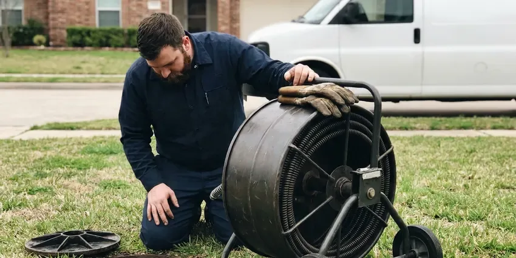

Repipe Specialists in Hanford, CA
For experienced repipe specialists in Hanford, CA, look no further than FBL Plumbing. We handle everything from initial assessment to final installation.
- Durable Pipe Materials
- Licensed & Insured
- Fast, Free Estimates
- Long-Lasting Pipe Materials

Get a Free Whole-Home Repipe Quote in Hanford, CA.
Don't wait for a plumbing emergency, protect your home's future with a full repipe.
Trusted Repipe Specialists in Hanford, CA for Lasting Plumbing Solutions
At FBL Plumbing, our repipe specialists in Hanford, CA are committed to upgrading your home's entire water delivery system. We carefully remove existing problematic pipes and install durable replacements like PEX or copper, ensuring improved water quality, pressure, and the end of costly leaks. This investment protects your property and enhances daily living.
Our expertise includes:
- Type L copper repipes for homeowners who prefer metal piping
- Foundation leak detection and repair for slab-on-grade houses.
- Code-compliant plumbing improvements

Additional Plumbing Maintenance Services in Hanford, CA
Our maintenance and specialty plumbing services in Hanford, CA protect your home year-round and extend the life of every system.


Customers
Why Choose FBL Plumbing for Repipe Specialists in Hanford, CA?
Choosing the right repipe specialists means investing in your home's long-term health and value. FBL Plumbing offers thorough, efficient repiping services designed to minimize disruption.
- Experienced Crews, Our technicians are highly trained in all aspects of residential and commercial repiping techniques.
- Long-Term Warranty, Our repipes carry strong workmanship and manufacturer warranties.
- Clean Job Sites, We protect floors and furniture and clean up each day.
Citywide Coverage
From downtown to the surrounding suburbs, our repipe specialists cover all of Hanford, CA. We bring our expertise directly to your door to assess and address your plumbing system.
Experienced Team
Our repipe specialists have broad experience with various piping materials, from old galvanized steel to modern PEX. They undergo continuous training to stay current with the best repiping practices.
Safety-First Approach
Safety is a top priority on every repiping project undertaken by FBL Plumbing. We follow strict safety protocols to protect your home and our team, including proper handling of tools and materials, and organized worksite management.
Trusted Certified Hanford Plumbing Services Professionals
At FBL Plumbing, we take pride in providing certified plumbing services throughout Hanford, CA. Backed by recognized industry credentials, our experienced plumbers combine technical skill with genuine customer care. Whether it is repair, installation, or maintenance, we follow strict safety and quality standards to deliver long-lasting results you can trust.
Call Us Now PHCC Plumbing Contractor Recognition
PHCC Plumbing Contractor Recognition Better Business Bureau (BBB) Accreditation
Better Business Bureau (BBB) Accreditation Angi Certified Pro
Angi Certified Pro ISO 9001 Quality Management Certification
ISO 9001 Quality Management CertificationLong-Lasting Whole-Home Repipe Services in Hanford, CA
Residential Repiping Experts in Hanford
For any residential property in Hanford experiencing plumbing issues due to old, failing pipes, FBL Plumbing offers custom repiping services. We assess your home's specific needs, considering factors like water pressure, family size, and future expansion plans, to recommend the best repiping strategy. Our goal is to provide a durable, efficient, and code-compliant plumbing system that improves your home's comfort and prevents future plumbing emergencies, keeping a reliable water supply throughout your property.

Efficient PEX Repiping in Hanford, CA
PEX (cross-linked polyethylene) is a flexible, cost-effective, and very popular choice for repiping projects in Hanford, CA. Its flexibility allows for fewer connections, reducing potential leak points and making installation quicker and less intrusive than traditional rigid pipes. PEX is also highly resistant to freezing, scaling, and chlorine, common issues in many water systems. We use quality PEX-A or PEX-B tubing, installed with durable crimp or expansion fittings, to create a dependable and efficient plumbing network throughout your home.
Repiping for Hard Water Areas in Hanford, CA
Homes on hard water see scale on fixtures and water heaters, while very soft water can be slightly corrosive to older copper pipe. Water in many areas contains minerals that cause scale buildup inside pipes over time. This hard water scale narrows the pipe's diameter, reduces water pressure, and can accelerate corrosion, especially in galvanized and older copper pipes. Our repipe specialists consider local water conditions, recommending materials like PEX or properly installed copper that are more resistant to mineral buildup, ensuring a longer-lasting plumbing system.
Commercial Repiping Services in Hanford, CA
Commercial properties in Hanford, CA have specific demands for their plumbing systems, often requiring larger pipe diameters and more complex layouts. FBL Plumbing provides specialized commercial repiping services to ensure your business operates smoothly without plumbing interruptions. We understand the importance of minimal downtime and work efficiently to upgrade your facility's water lines with robust materials like copper or high-grade PEX, meeting all commercial building codes and operational requirements.
Condo, Townhome and Multi-Family Repipes in Hanford
Shared walls and HOA rules make repiping attached homes more complex. We coordinate with HOAs, schedule water shutoffs and protect neighboring units. For property managers we offer building-wide repipes done in phases to keep residents at home. Each unit gets clear communication and daily cleanup.
Emergency Repipe Services in Hanford, CA
Sometimes a pipe burst or widespread failure necessitates an immediate repipe. FBL Plumbing offers emergency repipe services for critical situations in Hanford, CA. While a full repipe is a significant project, our team can quickly assess the damage and provide temporary solutions while planning the full replacement. We work efficiently to restore your plumbing system and limit disruption during an unexpected crisis, keeping your home safe and functional.
Copper Repiping in Hanford, CA
Some homeowners prefer copper for its long track record and rigidity. We install Type L copper, which has a thicker wall than the Type M used in many older homes. Joints are soldered with lead-free solder or pressed with ProPress fittings. Copper repipes usually cost more and take a bit longer than PEX.

Emergency Repipe and Leak Repair in Hanford
While a full repipe is a planned project, sometimes a major pipe burst or multiple severe leaks can call for immediate action. Our repipe specialists in Hanford are equipped to handle emergency situations, providing temporary fixes and assessing the need for a more complete repiping solution. We can promptly isolate damaged sections and offer options for immediate repair or a phased repiping approach to restore your water service safely and efficiently, preventing extensive water damage.
Repipe Specialists Near Me in Hanford, CA
When you search for 'repipe specialists near me' in Hanford, you want a local team that knows the area's plumbing infrastructure and building styles. FBL Plumbing is very familiar with Hanford homes, from their foundation types to their water supply characteristics. This local knowledge allows us to provide more precise assessments and efficient repiping solutions.
Our crews know the home styles and pipe materials common in Hanford. That experience helps us plan efficient routes and fewer wall openings. You get a faster repipe with less disruption.
FBL Plumbing at a Glance
- Fully licensed plumbing team covering Hanford, CA
- 24/7 emergency service with same-day scheduling
- Clear written estimates, no hidden fees
- 4.8-star rated by 834+ Northern California customers
Hanford Map
Hanford Information
- Population
- 59,938
- Area codes
- 559/530/562
- Service area
- Hanford and communities within 40 miles
- Nearby
- Visalia, Tulare, Fresno, Clovis
Repiping is a crucial investment for homes in Hanford, CA, since older pipe and mineral-heavy water can prematurely wear down original plumbing systems. Copper became standard in many mid-century homes here, and decades later pinhole leaks and corroded fittings are a common repair call.
Expert Services
Trust our professionals for reliable FBL Plumbing solutions in Hanford, CA.
Our Specialized Plumbing Services in Hanford, CA
At FBL Plumbing, we provide a complete range of plumbing services across Hanford, CA. From leak detection to full system installations, our team ensures fast, precise, and affordable service for both residential and commercial properties. Explore our core services below:


How Our Repipe Specialists Process Works in Hanford, CA
Our repipe process is planned in detail so you know what happens every day.
Request a Quote
Start by calling (669) 319-2034 to schedule a free, no-obligation consultation at your Hanford home. Our repipe specialist will visit to assess your current plumbing system and discuss your needs.
Detailed Inspection
We conduct a careful inspection of your existing pipes, identifying problem areas, material types, and potential challenges. We'll then provide a detailed estimate outlining material options like PEX or copper, scope of work, and project timeline.
Professional Installation
Our licensed plumbers carefully remove old piping and install your new plumbing system, following all Northern California and local Hanford codes. We work efficiently, minimizing disruption, and ensure proper functionality and water pressure.
Frequently Asked Questions About Repipe Specialists in Hanford
The cost of a whole-home repipe in Hanford varies significantly depending on the size of your home, the number of fixtures, and the chosen material (PEX or copper). Generally, you can expect to pay between $4,000 and $15,000 for a PEX repipe, and $8,000 to $25,000 or more for copper. We provide a detailed, itemized quote after an in-home assessment.
Both PEX and copper are excellent choices for repiping in Northern California, each with distinct advantages. PEX is more flexible, resistant to freezing, and generally less expensive, making it a great option for many homes. Copper is very durable, has a longer lifespan, and naturally inhibits bacterial growth, but costs more. We can discuss which material best suits your budget and needs.
A whole-home repipe requires permits, pressure testing and code knowledge. Most homeowners are better served by a licensed crew that can finish quickly and pass inspection.
Yes, whole-home repipes require a permit and inspection in most Northern California jurisdictions. We pull the permit and book inspections.
We primarily install quality copper piping from reputable manufacturers like Mueller Streamline and Cerro, known for their durability and purity. For PEX systems, we often use leading brands such as Uponor (Wirsbo Aquapex), Zurn PEX, or Viega PEX, chosen for their proven reliability and performance in homes.
PEX resists scale and pinhole corrosion and handles expansion well, which makes it a solid choice for hard water. Copper is durable too but costs more and can pinhole in corrosive water.
FBL Plumbing stands behind our repiping work with solid warranties covering both labor and materials. The specific terms of your warranty will be provided in your detailed estimate. We use quality materials from trusted brands like Uponor PEX and Mueller Streamline copper, supporting long-term reliability for your new plumbing system in Hanford, CA.
Most whole-home repipes can be completed within 3 to 5 days, depending on the size and complexity of your home and the chosen piping material. We strive to minimize water shut-off periods, often restoring water service by the end of each workday. Our team works efficiently to get your plumbing fully operational as quickly as possible.
What People Are Saying About Our Plumbing Experts?

Robert G.
The trenchless sewer replacement saved our front yard. They walked us through the camera inspection footage first so we knew exactly what we were paying for.
Sewer Line Replacement · Fresno, CAJames P.
Our commercial plumbing system had a leak under the sink, and FBL Plumbing handled it professionally. The plumbers arrived quickly and restored everything without disruption to our customers.
Commercial Plumbing · Porterville, CA
Mark T.
When our office needed drain cleaning, FBL Plumbing provided quick, reliable service. The plumber arrived on time and made sure every drain flowed perfectly before leaving. Very satisfied.
Drain Cleaning · Hanford, CA
Sofia M.
Two new toilets installed in one visit, no mess left behind, and the tech even adjusted a faucet he noticed was dripping. Fair pricing and really friendly.
Toilet Installation · Madera, CA
Patricia H.
We had a slab leak that two other companies could not find. FBL Plumbing located it in under an hour, explained our options, and the price matched the quote to the dollar.
Slab Leak Repair · Tulare, CA
Emily R.
I called FBL Plumbing for plumbing repair, and the technician was fast, polite, and thorough. They explained the problem clearly and fixed it the same day. I will definitely hire them again. Highly recommended!
Plumbing Repair · Visalia, CA